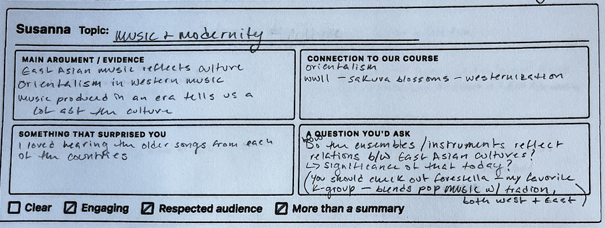
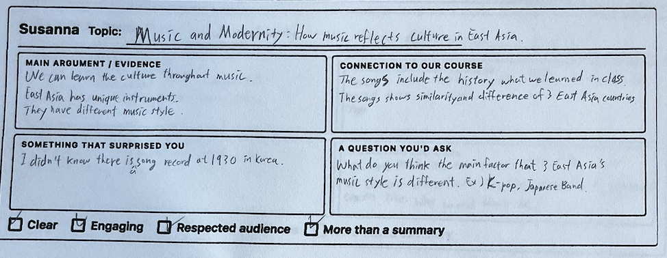
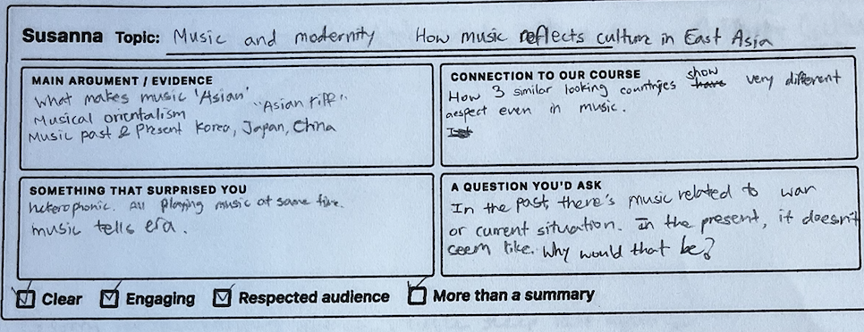
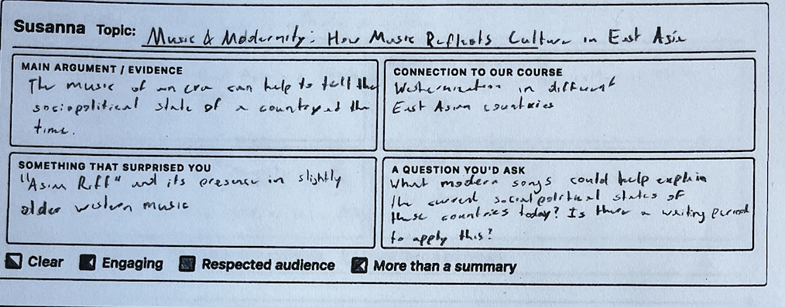
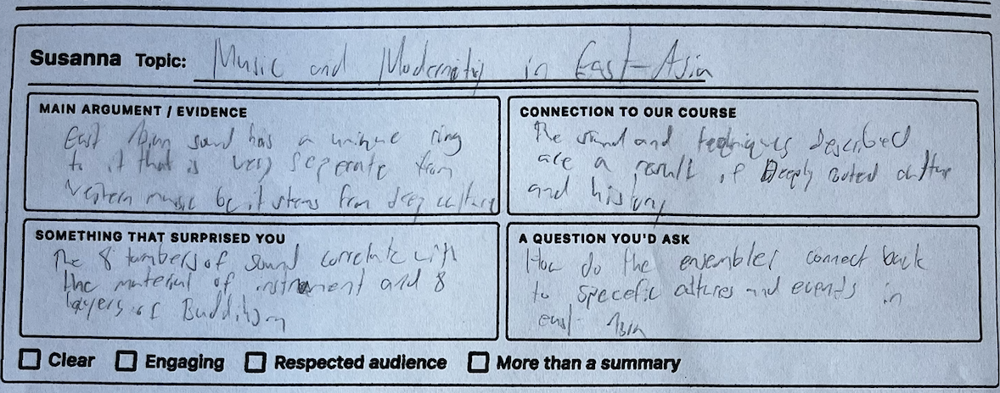
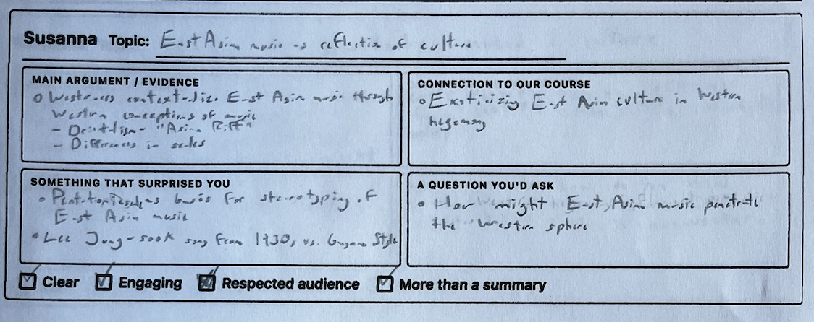
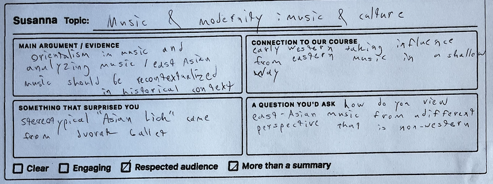

What your classmates wrote about your presentation
EAST 213 / Friday, March 13, 2026







Synthesis
Strongest marks of the day: 6/7 Engaging, 6/7 More Than a Summary. Your classmates consistently identified the core argument: Western frameworks like the "Asian riff" and musical orientalism distort how East Asian music is understood. The use of audio examples (playing songs from each country) was the most-cited engagement tool. Specific surprises included the Dvorak ballet origin of the "Asian Lick," the pentatonic scale as stereotyping basis, Lee Jung-sook's 1930 recording, heterophonic texture, and the 8 kinds of sound correlating with Buddhist layers. The strongest peer question: "In the past, music was related to war or current situations. In the present, it doesn't seem like that. Why would that be?" Another peer asked what modern songs could explain the current sociopolitical state of these countries today. Both questions point toward productive analytical extensions of your argument.